SAFARI
Users
Angel Hair
- This is pretty much the same thing as Capellini, the smallest member of the spaghetti family.Bucatini
- [024; Hollow Spaghetti]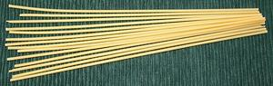 This popular pasta is thicker than spaghetti, but it cooks well because it is hollow. Moisture doesn't have to penetrate all the way to the center because there is no center. The photo specimens were 10 inches long and 0.110 inch diameter.
Candele
- [244 (Bronze die); Candles]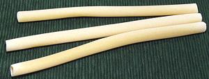 Basically, these are oversize Ziti. One use for these is to stuff with whole asparagus spears, then layer in a casserole with sauce and cheese. They can be stuffed with other stuffings by use of a pastry pipe. Of course, they can also be served unstuffed with a sauce, still usually baked in a casserole. There is also a Candella Penne version with diagonally cut ends. The photo specimens were 9.5 inches long and 0.58 inch diameter.
Capelli d'Angelo Nests
- [281, Barbine a nido]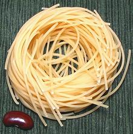
These pasta nests are quite popular. They are often cooked, then set
on a plate with a cheese sauce poured over, or they may be dropped
into a small bowl with sauce over. The photo specimen was 2.5 inches
diameter and 1.0 inch high, made up of pasta 0.40 inch diameter.
Capellini
- [036]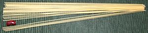 This is the thinnest member of the spaghetti family, die #1 in most systems. The photo specimens were 10.15 inches long and 0.040 inch diameter but some manufacturers go as low as 0.035 inch.
Ciriole
- [038]Made in Umbria by twisting and stretching a ribbon of pasta until it's about twice as thick as Spaghetti. You're not likely to find it anywhere far from Umbria.
Fedelini
- [043; Fidelini, Trenette]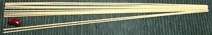
Similar to Spaghetti but thinner, 0.055 inch diameter.
Ferretto Calabro
- [300]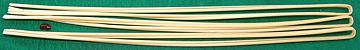 This pasta has the same "S" shaped cross section as Casaricci but is much smaller in width and thickness. It is also a lot longer, being the full pasta length of 42 inches folded to 21.5 inches long. It is 0.31 inch wide and 0.17 inch thick. As with Casaricci, this form is very good at holding moderately thick sauces.
Fettuccini
- [015; Lasagnette, Fettucce, Tagliatelle]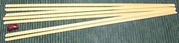
This is probably the most popular of the wider ribbon pastas, and holds medium to heavy meat sauces well. It needs a bit more care than linguini at the start of cooking because it has a tendency to stick together until the water is back up to a boil.
There is no definitive difference between Fettuccini and
Tagliatelle, and both can vary greatly in width.
In North American practice, "Fettuccini" more often implies dried
pasta, while "Tagliatelle" more often implies fresh pasta. The photo
specimens were 10.2 inches long, 0.180 inch wide and 0.045 inch thick.
Fettuccini Nests
- [320; Tagliatelle]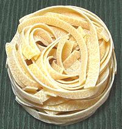
This flat ribbon pasta is sold also as "nests". There is no definitive
difference between Fettuccini and Tagliatelle.
The photo specimens were 0.26 inch wide and 0.035 inch thick. They
were labeled "Tagliatelle", but were actually narrower than nests from
other makers labeled "Fettuccini", so width is not definitive.
Waverly Root holds they are the same thing, with "Fettuccini" the
Roman name and "Tagliatelli" used elsewhere. Fettuccini is usually
used with heavier meat sauces.
Fusilli Bucati Lunghi
- [026; Fusilli col Buco, Long Springs]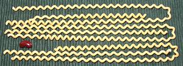
These consist of a long hollow pasta, similar to bucatini, wrapped in
the manner of a coil spring. The photo specimens were made from 0.115
inch diameter tube, wound to 0.27 inch diameter spirals 9 inches
long (or more than twice that if you measure around the loop, but the
loop will be broken in many cases).
Lasagne
- [044]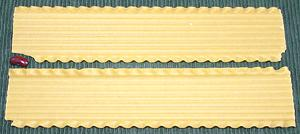 This is the fancy version, strongly ridged with ruffles on both sides. Other versions are made, including flat, ridged without ruffles and ruffles on just one side. Lasagne is often made fresh, in which case it will be flat without ridges or ruffles. The photo specimens were 10 inches long, 2 inches wide and with a wall thickness of 0.048 inch, but it may be considerably wider (up to 4"). It is used mainly to make a casserole called "lasagne al forno" in Italy and in the U.S. just "lasagne". There are also "no boil" versions which don't require pre-cooking. It appears the Romans prepared a dish similar to lasagne but with fresh pasta rather than dry (and no ruffles), and possibly the Greeks before them.
Lasagne
- [258 (bronze die)]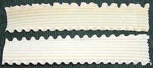 This is as fancy as lasagne gets, strongly ridged, with ruffles on both sides, and extruded through bronze dies for better sauce adhesion. The photo specimens were 11 inches long, 2.13 inches wide and with a wall thickness of 0.045 inch.
Lasagnette
- [108] This pasta may be cut short, as in the photo, or be around 11 inches
long. It also comes in the same three styles as
Lasagne: ruffles both edges, ruffles one edge, and
no ruffles. Long ones can be used similarly to regular lasagne, and
short cuts are decorative served with pesto. I have not yet
obtained them in Italian, so the photo specimens (#233) are Polish,
made from bread flour but using a standard Italian die. The main
visual difference would be color. These were typically 0.032 inch
thick, 0.75 inch wide and 1.5 inches long.
This pasta may be cut short, as in the photo, or be around 11 inches
long. It also comes in the same three styles as
Lasagne: ruffles both edges, ruffles one edge, and
no ruffles. Long ones can be used similarly to regular lasagne, and
short cuts are decorative served with pesto. I have not yet
obtained them in Italian, so the photo specimens (#233) are Polish,
made from bread flour but using a standard Italian die. The main
visual difference would be color. These were typically 0.032 inch
thick, 0.75 inch wide and 1.5 inches long.
Lasagnotte
Same as Lasagnette except in lengths longer than the standard 10".
Lingue de Suocera
- [121; Mother-in-law tongues]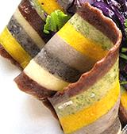
This is a multicolor pasta from Puglia. It is fairly wide, has
sharp saw tooth edges and it is twisted. Dried, it is available
commercially, at an extremely high price, often over US $20 per pound.
The photo fragment is ©
Foodiva's Kitchen where Maya provides complete instructions on how
to make this at home - if you dare.
Linguine
- [023; Linguini, Linguelline, Bavette fino, Bavettine, Linguittine, Radichini]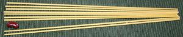
This is one of the most popular long pastas in Italy and in North
America, and certainly one of mine. It cooks fairly quickly and holds
sauces better than spaghetti due to its flattened oval shape. Generally
about 10-1/2 inches long, 0.090 inch wide and 0.045 inch thick.
Mafalde
- [046]A long ribbon or short pasta with ruffled edges, same as Mafaldine but larger.
Mafaldine
- [045]A long ribbon pasta with ruffled edges. It is pretty much identical to Riccia. The photo specimens were 0.48 inch wide by 9.2 inches long. Can be used like a mini lasagne in a casserole or eaten with sauce on a plate.
Mezzanelli
- [282]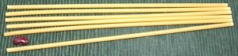 This long hollow pasta is just like Bucatini except larger in diameter, and identical to #333 Regine. The photo specimens were 10.0 inches long and 0.175 inch diameter. This is not an easy pasta to find, but the larger size of Greek Pastichio is exactly this size (the smaller is the same size as bucatini).
Mezzanini
- [322 bronze]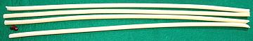 This long hollow pasta is similar to 282 Mezzanelli except about twice the diameter The photo specimens, extruded through bronze dies, were 20.5 inches long and 0.34 inch diameter.
Ondine
- [335]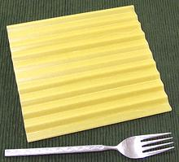 These corrigated sheets of pasta are meant for easy production of recipes such as lasagne. They ar 7 by 6-1/4 inches and 0.030 inch thick. The package comes with two fitted aluminum pans. They are designed not to need pre-cooking, just soak a few minutes in warm water, then assemble with the sauce. Ingred: enriched semonlina.
Pappardelle
- [283 bronze die]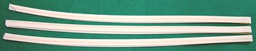 This is a wide flat ribbon pasta generally served with meaty sauces. The photo specimens, extruded through bronze dies, were 44 inches long folded in drying to 21.2 inches. Width was 0.52 inch and thickness 0.050 inch. This shape is often made fresh.
Pappardelle Nests
A wide flat ribbon pasta generally served with meaty sauces. The "nest" version is exceptionally wide at 1.125". This shape is often made fresh.
Perciatelli
- [124]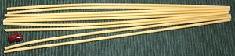 These hollow tubes are very similar to Bucatini, but just a little larger diameter. They are about 0.115 inch diameter and 10 inches long.
Pizzoccheri
Flat ribbon noodles similar in form to tagliatelle but made with 80% buckwheat and 20% wheat flour. These are popular in the Alpine region of northern Italy where buckwheat grows much better than durum wheat.
Regine
- [333]Identical to Mezzanelli, tubular, 10 inches long and 0.175 inch diameter.
Reginelle
- [102; Reginette]A wide ribbon pasta with ruffled edges.
Riccia
- [107]Very similar or identical to Mafaldine, about 1/2 inch wide and is sometimes ruffled on one edge only instead of both edges.
Ricciolini
- [093; Riccioline, Sfresatine, Manfredine, Fettuccia riccia]Similar to Tagliatella, but wider at about 0.59 inch.
Spaghetti
- [040]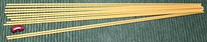 Once practically the only form for dried pasta due to manufacturing considerations, spaghetti is still quite popular, particularly in North America. Personally, I prefer linguini, but use spaghetti for recipes where it is traditional. The photo specimens were 10.15 inches long and 0.075 inch diameter.
Spaghetti alla Chitarra
- [037]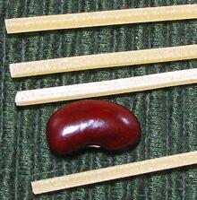
This pasta resembles regular spaghetti and is about the same size but
square in cross section. Traditionally it is cut from rolled
out dough by doing a final roll across a wooden box , the top of
which tightly strung with wires - the Guitar / Chitarra. In Italy this
is most often fresh pasta, but it is available dried. The photo
specimens were 0.080 inch square by 42 inches long, folded to 21 inches.
Many pasta machines make spaghetti in this form.
Spaghetti Lunghi
- [284]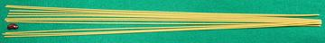 This is exactly the same as regular Spaghetti, but much longer. Those I had on hand were 21 inches long and 0.075 inch diameter.
Spaghetti al Nero di Seppia
- [285; Spaghetti with Squid Ink]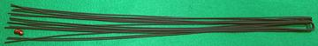
This is spaghetti dyed black with squid ink, In the case of the photo
specimen in is int "lunghi" form. 21 inches, or 42 if you count both
sides of the fold. 0.73 inch diameter. Ingred: durum semolina,
cuttlefish ink 2%.
Spaghettine
- [347 Broze Die]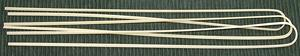 This pasta is much like Linguine, but a little wider and thicker. The photo specimens were 21.5 inches long, 0.111 wide and 0.053 inch thick.
Spaghettini
- [014]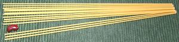 This pasta is much like spaghetti, but a little thinner. The photo specimens were 10.2 inches long and 0.065 inch diameter.
Spaghettoni
- [192]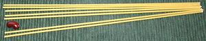 This pasta is much like spaghetti, but a little thicker. The photo specimens were 10.2 inches long and 0.083 inch diameter, almost exactly the same as De Cecco has given for Vermicelli.
Stringozzi
- [089]A specialty of Umbria in central Italy, this is a long thin pasta with a square cross section and a rough texture that is generally sold fresh. It's a little thicker than regular spaghetti but pretty much identical to Spaghetti alla Chitarra.
Tagliatelle
- [049; Tagliarelli, Reginelle, Fresine, Nastri, Fettuccelle, Fettucce romane, Fiadi]
This very important flat ribbon pasta is rarely sold under this
name in North America. There is no definitive difference between
Tagliatelle and Fettuccini, but in North American
practice, "Tagliatelle" more often implies pasta made fresh, while
"Fettuccini" more often implies dried pasta. The photo specimens were
0.26 inch wide and 0.035 inch thick. They were labeled "Tagliatelle",
but were actually narrower than nests from other makers labeled
"Fettuccini", so width is not definitive. Waverly Root holds they are
the same thing, with "Fettuccini" the Roman name and "Tagliatelli"
used elsewhere. Tagliatelle is usually used with heavier meat sauces.
Taglierini
- [052; Tagliolini]The smallest pasta in the Tagliatelle family, a flat ribbon pasta a little larger than Spaghetti. It is generally made fresh.
Trenette
- [050; Trinette]A flat ribbon pasta smaller than Linguini.
Tripoline
- [105]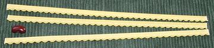 This is a long ribbon pasta with ruffles on one edge only. The photo specimens were 0.300 inch wide, 9.5 inches long and 0.42 inches thick. Unlike unruffled flat pasta strips these are unlikely to stick together during the early stages of cooking.
Vermicelli
- [039; "Little Worms"]This is one of the very first Italian pastas, already being mde in Sicily before 1150 CE. It is much like spaghetti, but a little thicker. Unfortunately there is confusion because in the USA, the National Pasta Association defines it as thinner than spaghetti. This is pretty much a moot point, since I've never seen any Italian type pasta sold as "Vermicelli" here in California. Consequently, the photo specimens were from a package labeled "Spaghettoni", and were exactly the same thickness given by De Cecco for Italian "Vermicelli". They were 10.2 inches long and 0.083 inch diameter. Since Vermicelli is often called for in Italian recipes, I consider the Italian dimension definitive, with Spaghettoni the appropriate substitute.
From his travels, Marco Polo described Asian noodles as being
"like vermicelli", a pasta already long popular in Italy. This has
compounded the confusion, because ever since then "vermicelli" has
been used as a loan word when translating local noodle names to
English - From Anatolia and Caucasus all the way through China and
Southeast Asia. The products so named are usually, though not always,
considerabley thinner than spaghetti.
Vermicellini
- [293]Thin vermicelli - very much like spaghetti, but just a shade thiner at 0.70 inch diameter. Often used with a light sauce based on olive oil, garlic and hot chili, accompanying seafood.
Vermicelloni
- [041]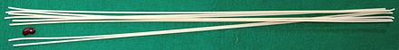 Apparently the "oni" refers to the length, not the thickness, because the photo specimens, extruded through bronze dies, were .083 inch diameter, exactly the same as De Cecco lists for vermicelli, but were 20.75 inches long. This is a rare pasta but I found some at an Italian market in Los Angeles, wrapped up in the traditional blue paper that's not much seen anymore.
Zita
- [052; Ziti, Bridegrooms]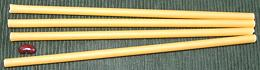 This smooth, tubular pasta with straight cut ends is the long form of Ziti, but is sometimes called "Ziti". They are often partially boiled, then included with sauce in a casserole to be baked. The photo specimens were 0.31 inch diameter and 10 inches long.